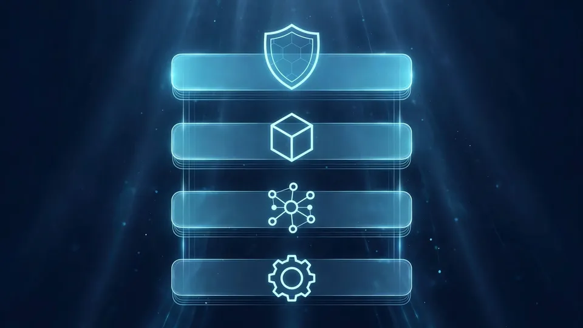
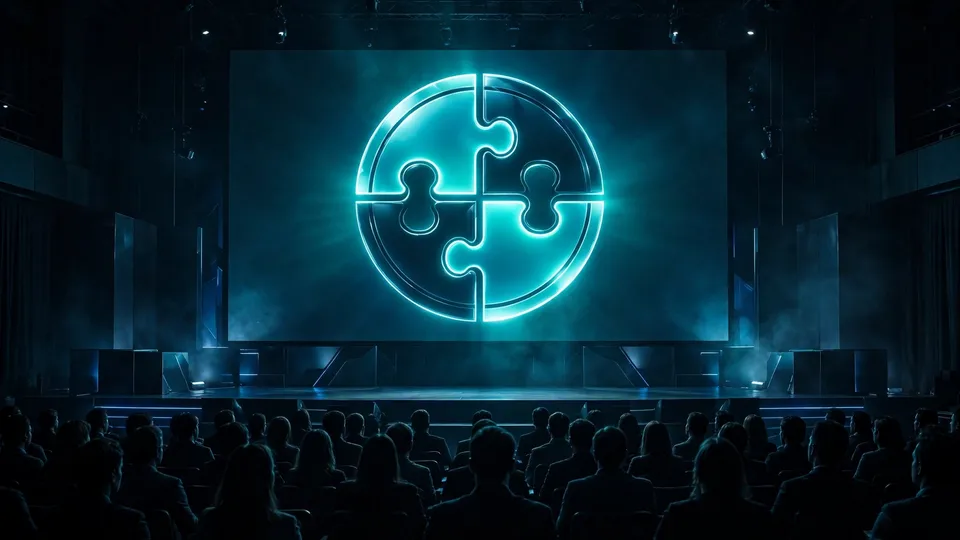

Rivals donate to the same home: Anthropic, OpenAI, Hugging Face and Alibaba hand four agent projects to the Agentic AI Foundation
- Who: the Agentic AI Foundation (AAIF), with contributions from Anthropic, OpenAI, Hugging Face, and Alibaba.
- What: four new hosted projects — Agent Skills, Open Responses, OpenEnv, and OpenSandbox — bringing AAIF to 10 projects in its first year, up from three launch projects in December 2025.
- When: announced October 22, 2026, at AGNTCon + MCPCon North America (October 22–23, San Jose McEnery Convention Center).
- Agent Skills (Anthropic): an open format for giving agents new capabilities — instructions, scripts, and resources packaged so agents can load them on demand, portable across agent products.
- Open Responses (OpenAI): an open specification for multi-provider, interoperable LLM interfaces, based on the OpenAI Responses API, with a shared schema and consistent streaming events.
- OpenEnv (Hugging Face): an open framework and community hub for creating reinforcement-learning environments, exposed as a containerized service with MCP and the Gym training interface.
- OpenSandbox (Alibaba): a general-purpose sandbox platform for AI applications, with multi-language SDKs and Docker and Kubernetes runtimes for coding agents, GUI agents, evaluation, and RL training.
It is not every day that OpenAI and Anthropic sign the same document. The Agentic AI Foundation announced on Wednesday that it is taking four new projects under its wing — one contributed by each of Anthropic, OpenAI, Hugging Face, and Alibaba — and the lineup reads like a deliberate map of the whole agent stack. How agents learn new skills, how apps talk to models from different providers, how agents get trained, and where they run safely: each layer now has a project living under open, vendor-neutral governance.
The additions bring the foundation to 10 hosted projects in its first year, up from the three it launched with in December 2025. The existing roster — the Agent2Agent (A2A) protocol, Agent Router, agentgateway, AGENTS.md, goose, and the Model Context Protocol (MCP) — already made AAIF the default neutral address for agent plumbing. With these four, the address now covers nearly the full lifecycle of an agent.

Agent Skills: making agent know-how portable
Anthropic's contribution is Agent Skills, an open format for giving agents new capabilities and domain expertise. Skills package instructions, scripts, and resources in a reusable form that agents can load on demand, which makes specialized know-how portable across agent products and platforms instead of locked into one vendor's harness.
“We launched Agent Skills a year ago to give developers and enterprises alike an open standard to make their agents more capable,” said David Soria Parra, co-creator and lead maintainer of MCP at Anthropic. “Today, we're donating Agent Skills to the AAIF to ensure that anyone building with skills can shape what's next.” He added that the foundation has “done important work in giving the Model Context Protocol a neutral home since we donated it less than a year ago” — a reminder that Anthropic has now handed over two of the core building blocks of the open agent stack.
Open Responses: one interface, any provider
OpenAI is contributing Open Responses, an open specification for building multi-provider, interoperable LLM interfaces based on the OpenAI Responses API. It defines a shared schema, consistent streaming events, and extensible tooling, so developers can describe requests and outputs once and run them across model providers with minimal translation.
That is a striking move from the company whose API set the de facto standard. “Open Responses is thrilled to be joining the AAIF to further our mission of helping developers build great products on today's language models through simple, clean, and unified interfaces,” said Steve Coffey, a member of technical staff at OpenAI.
OpenEnv: training grounds for agents
Hugging Face's OpenEnv is an open framework and community hub for creating reinforcement-learning environments that makes them interoperable, plug-and-play, easy to build, easy to share, and scalable. It works through a simple containerized service that exposes a familiar agent interface, MCP, and Gym — the training protocol that training libraries already use.
RL environments are, as Hugging Face machine learning engineer Ben Burtenshaw put it, “a fundamental part of that stack because they teach agents the capabilities they will use in the real world.” The committee behind the project brings in experience from Hugging Face, Microsoft, Reflection, Meta-PyTorch, Fleet, Mercor, RadixArk, Modal, Prime Intellect, and more.
OpenSandbox: where agents run safely

Alibaba's OpenSandbox is a general-purpose sandbox platform for AI applications: multi-language SDKs, unified sandbox APIs, and Docker and Kubernetes runtimes covering coding agents, GUI agents, agent evaluation, AI code execution, and reinforcement learning training. It includes a sandbox protocol defining lifecycle and execution APIs, so teams can extend it with custom runtimes.
“While OpenSandbox was created at Alibaba, we don't want its future to be defined by a single company,” said Xiaobin Xu, Alibaba's head of development infrastructure. “By bringing the project to AAIF, we're creating a path for more developers and organizations to help shape how sandbox environments work across the agent ecosystem.”
Why a neutral home matters now
The subtext of the whole announcement is in the foundation's own framing. “A year ago, AAIF launched with three projects and a bet that agentic AI needed a neutral home to thrive. Today we host 10,” said Manik Surtani, the foundation's CTO and co-founder. “Four different companies chose to contribute them to neutral governance. That's the job of this foundation: giving the community one place to build shared standards, protocols, and infrastructure, with no single company controlling the outcome in a way that puts the community first.”
The timing is not accidental. Agents are moving from demos to production systems, and production systems need boring, shared infrastructure: ways to load skills, talk to any model, train in reproducible environments, and run inside sandboxes. The four new projects are exactly that boring infrastructure — and boring infrastructure is what decides who can build on top.
Frequently asked questions
What are the four new AAIF projects?
Agent Skills, contributed by Anthropic; Open Responses, contributed by OpenAI; OpenEnv, contributed by Hugging Face; and OpenSandbox, contributed by Alibaba. They cover four layers of the agent stack: how agents gain skills, how apps talk to models across providers, how agents are trained and evaluated, and where agents run safely.
How big is the Agentic AI Foundation now?
The additions bring AAIF to 10 hosted projects in its first year, up from the three launch projects it started with in December 2025. The existing projects include the Agent2Agent protocol, Agent Router, agentgateway, AGENTS.md, goose, and the Model Context Protocol.
Why does a neutral home matter for these projects?
Under AAIF’s open, vendor-neutral governance, no single company controls the standards. That is the point of the foundation: one place to build shared standards, protocols, and infrastructure for agentic AI, with the community — not one vendor — shaping what comes next.